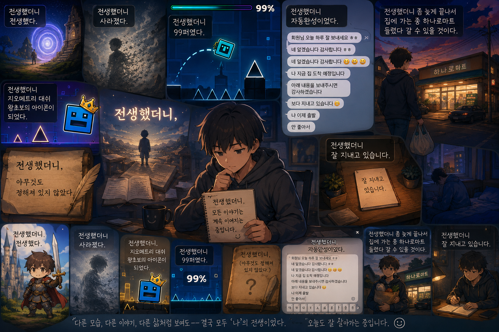

CHILD'S IMAGINATION ARCHIVE
아이의 한마디가
하나의 세계가 되는 곳
아이의 한마디에서 시작된 엉뚱한 전생과 게임 같은 상상을 한 편씩 이야기로 묶었습니다. 제목이 마음에 드는 이야기부터 자유롭게 골라 읽어보세요.

전생 시리즈
현재까지 만든 이야기를 번호순으로 정리했습니다.
가벼운 상상
01. 전생했더니 개미알이었다
움직일 수도 말할 수도 없는 개미알로 태어나, 가장 작은 시작이 얼마나 끈질긴지를 배우게 되는 이야기.
가벼운 상상02. 전생했더니 안경이었다
누군가의 코끝 위에서 세상을 또렷하게 보여주는 안경이 되어, 보는 일의 힘을 알게 되는 이야기.
가벼운 상상03. 전생했더니 전생하지 않았다
모두가 새 몸으로 다시 태어났는데 혼자만 그대로 남아버려, 지금의 나를 다시 보게 되는 이야기.
가벼운 상상04. 전생했더니 전생했다
설명은 없지만 분명 다시 시작되었다는 사실만으로도 가슴이 두근거리는 아주 메타한 이야기.
조금 진지한 상상05. 전생했더니 사라졌다
몸도 이름도 없어진 채, 존재한다는 일의 소중함을 조용히 바라보게 되는 이야기.
게임 상상06. 전생했더니 지오메트리 대쉬 왕초보의 아이콘이 되었다
왕초보 손가락 아래에서 수없이 부서지며, 다시 시작하는 힘을 배우는 게임 속 전생 이야기.
게임 상상07. 전생했더니 99퍼였다
거의 다 왔는데도 끝나지 않았다는 이유로 가장 아프게 남는 숫자, 99퍼센트의 이야기.
문장 상상08. 전생했더니,
아직 끝나지 않은 문장 속 쉼표 하나가 되어, 무엇이든 이어질 수 있는 자유를 만나는 이야기.
일상 상상09. 전생했더니 좀 늦게 끝나서 집에 가는 중 하나로마트 들렸다 갈 수 있을 것이다
퇴근길 하나로마트에 들르는 소소한 임무가, 의외로 따뜻한 생활의 한 장면이 되는 이야기.
일상 상상10. 전생했더니 잘 지내고 있습니다
‘잘 지내고 있습니다’라는 짧은 말 속에, 하루를 살아내는 마음이 얼마나 많이 숨어 있는지 보여주는 이야기.